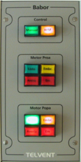

La Consola de Propulsión incorpora en el pupitre un módulo de Control de Motores para el Eje de Babor y otro para el de Estribor. Mediante estos módulos, el operador puede embragar y desembragar los motores de proa y de popa en cada eje, y seleccionar si la línea se controla desde el Telégrafo o desde la Palanca de Control.

Cada uno de estos módulos (babor y estribor) contiene los siguientes elementos:
- Pulsador de Control Manual: cuando se pulsa, se activa el control desde Telégrafo. El pulsador permanece iluminado hasta que se cambie el modo de de control. Este es el modo de control que se establece por defecto.
- Pulsador de Control RPM: cuando se pulsa, se activa el control desde la Palanca de Control. El pulsador permanece iluminado hasta que se cambie el modo de de control.
Estos dos pulsadores son excluyentes entre sí.
- Indicador de Listo del Motor de Proa / Popa: estará encendido mientras este motor esté listo para ser usado, es decir, si no hay condición de avería y:
- Si la hélice es de paso variable, el motor está arrancado.
- Si la hélice es de paso fijo, la presión del aire de arranque es suficiente.
- Pulsador de Embrague / Desembrague de Motor de Proa / Popa: cuando es pulsado se procede al embrague del motor correspondiente. Este pulsador permanece encendido mientras el motor esté embragado. Si se pulsa cuando el motor está embragado, se procede a desembragar el motor y se apaga el pulsador.
Para que la petición de embrague de un motor tenga efecto, previamente el motor debe estar listo y desembragado, y las RPM y paso de hélice del eje deben corresponder a un régimen válido.
- Indicador de Parada de Emergencia y pulsador de Aceptación de Motor de Proa / Popa: este pulsador actúa como indicador de parada de emergencia y pulsador de aceptación. Cuando el Instructor impone la condición de Parada de Emergencia de un motor, se para el motor y se enciende el pulsador de Parada de Emergencia correspondiente.
- Indicador de Avería y Pulsador de Aceptación de Motor de Proa / Popa: Cuando el Instructor introduce una avería en el motor, este indicador se enciende de forma intermitente. Cuando el operador lo presiona (reconociendo la avería), el indicador se ilumina de forma fija, y finalmente se apaga cuando el instructor elimina la condición de avería.
Esta avería de motor es diferente de la parada de emergencia y se corresponde con una reducción de su potencia máxima en un valor es impuesto por el Instructor.